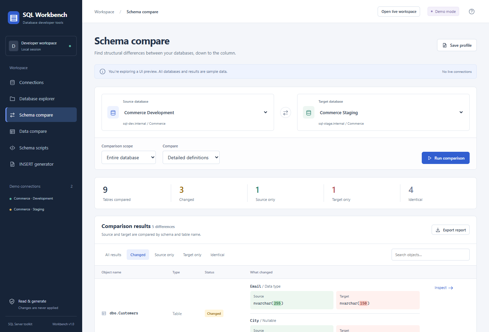

For SQL Server developers
Know what changed.
Choose what follows.
Compare database schemas and table data in your browser. Inspect the differences, then export the SQL you need.
Your databases stay under your control.
Generated SQL is never executed by the app.
dbo.Customers / Email
nvarchar(255)nvarchar(150)One column. Two definitions. See the difference before writing a migration.
A closer look
The detail is the point.
Source and target values, highlighted changes, and SQL drafts—all in one workspace.

From connection to script
Small tools.
Useful answers.
Built for internal development teams that need to understand their SQL Server databases.
- Compare schemas
- Compare names, data types, or detailed definitions. See source and target values and generate SQL drafts for selected objects.
- Compare table data
- Map columns, choose composite keys, filter rows, and inspect changed values. Export INSERT, UPDATE and DELETE scripts for selected differences.
- Generate SQL files
- Export object definitions or turn a SELECT result into INSERT statements. Preview, copy, and download a .sql file.
- Explore and connect
- Browse tables, views, procedures and definitions. Use SQL Server credentials or Windows authentication, with connection strings or individual fields.
You review.
You decide.
Script generation never applies changes to your connected database. Data exports check for stale comparisons and include target-value checks and transaction rollback in the generated file.
Schema drafts flag potential data loss and changes that require manual SQL. Review dependencies, conversions and permissions before running exported files yourself.
Self-hosted
Make it your workbench.
Install the .NET 10 SDK, clone the repository, and start the app. Demo mode works without a database connection.
For live connections, use SELECT and VIEW DEFINITION permissions. Deploy internally with IIS or Docker.
Read setup and deployment instructions ↗git clone https://github.com/imgsn/sql-workbench.git
cd sql-workbench
$env:ASPNETCORE_ENVIRONMENT='Development'
dotnet run --project Workbench.csproj --no-launch-profile --urls http://localhost:5180Then open http://localhost:5180/?tool=schema&demo=true
Before you connect
The workbench has no sign-in and is intended for a trusted internal environment. Windows authentication uses the identity running the server, not the browser user. This project page is a static introduction; it does not connect to databases.